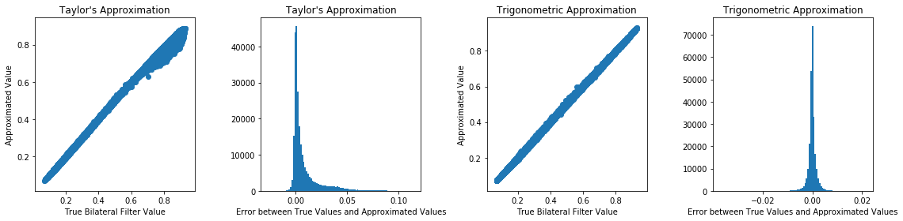

Bilateral filtering is a popular nonlinear filtering because of its property of edge preservation. By using both spatial kernel and range kernel, the weight of nearby pixel is not only determinate by the spatial distance but also intensity distance. As a result, it only smooth pixel intensities on nearby pixels whose pixel intensities are similar. However, the nonlinear nature make it computationally intensive and impossible to use Fast Fourier Transform to speed up computation like regular convolution. The naive implementation has time complexity of O(NWC) where N is the size of image (height times width), W is the size of kernel window (height times width), and C is the number of image channels. Unlike regular convolution whose time complexity is independent of filter size, It does not scale well with the size of filter. It is problematic as the filter size tend to scale with the size of images meaning that larger image usually require larger filter, which makes it not feasible to deploy bilateral filtering for high resolution images. As a result, multiple approximation of bilateral filtering were proposed to accelerate the computation of bilateral filtering. The key idea of most approximation is approximating bilateral filtering with multiple standard convolution and perform convolution at Fourier space to archive O(Nlog(N)) time complexity. This project is aimed to review some of these approximations and compare the ratio of speed up of these approximation.
Methods
The bilateral filter is defined as
\[f_{filtered} (x) = \frac{1}{W} \sum_{y \in D} g(|| x - y ||) h( || f(x) - f(y) ||) f(y)\]
where f is the intensity of image, D is the index set of a image of size N and W is normalization term defined as
\[\sum_{y \in D} g( || x - y ||) h(||f(x) - f(y)||)\]
The function g is spatial kernel that smooth close by pixels and h is range kernel that smooth similar intensities.
While there are multiple choice of g, h, in this project we only consider h to be Gaussian kernel since different kernel function needs different approximation methods.
The analysis is independent of the choice of g. Hence, the bilateral filter of interest is defined as
\[f_{filtered} (x) = \frac{1}{W} \sum_{y \in D} g(\ || x - y ||) \exp( - \frac{1}{2 \sigma_h^2} || f(x) - f(y) ||^2 ) f(y)\]
The complexity of approximation for grayscale images and high dimensional images (multi-channel color image or hyperspectral images)
are completely different. While approximation of bilateral filtering on grayscale images are usually deterministic and require less
than ten convolutions, approximation of bilateral filtering on high dimensional images are usually stochastic and require hundreds
of convolutions to reduce the variance of estimate. Direct application of approximation for grayscale images to each channel of high
dimensional images does not work as for example it causes color distortion on color images since it does not see the intensities of
multiple channels on pixel as a whole in computing range difference.
The key idea of fast bilateral filter is to approximate
\[\exp( - \frac{1}{2 \sigma_h^2} || f(x) - f(y) ||^2 )\]
as the sum of products of functions on x and y which is seperable:
\[\exp( - \frac{1}{2 \sigma_h^2} || f(x) - f(y) ||^2 ) \approx \sum_{n = 0}^m a_n(x) b_n(y)\]
Then, apply standard convolution with fast Fourier transform.
Grayscale Image
Taylor's Expansion Approximation
For one dimensional image, a straight forward method of approximating [1]
\[f_{filtered} (x) = \frac{1}{W} \sum_{y \in D} g(\ || x - y ||) \exp( - \frac{1}{2 \sigma_h^2} (f(x) - f(y))^2 ) f(y)\]
is using the first few terms of Taylor's expansion as an approximation of original function.
Directly approximating it using Taylor expansion does not works since it cause explosion of summation terms
\[\exp( - \frac{1}{2 \sigma_h^2} (f(x) - f(y))^2 ) \approx \sum_{n = 0}^r \frac{1}{n!} (- \frac{1}{2 \sigma_h^2} (f(x) - f(y))^2)^n\]
However, we can first expand the square inside exponential, then only apply Taylor expansion on non separable term. As a result, the exponential function can be written as
\[\exp( - \frac{1}{2 \sigma_h^2} (f(x) - f(y))^2 ) = \exp(- \frac{1}{2 \sigma_h^2} f(x)^2) \exp(- \frac{1}{2 \sigma_h^2} f(y)^2) \exp(\frac{1}{\sigma_h^2} f(x) f(y))\]
which can then be approximated with finite Taylor expansion:
\[\exp(- \frac{1}{2 \sigma_h^2} f(x)^2) \exp(- \frac{1}{2 \sigma_h^2} f(y)^2) \sum_{n = 0}^m \frac{1}{n!} (\frac{1}{\sigma_h^2} f(x) f(y))^n = \sum_{n = 0}^m \frac{1}{n!} \frac{1}{\sigma_h^{2n}} \exp(- \frac{1}{2 \sigma_h^2} f(x)^2) f(x)^n \exp(- \frac{1}{2 \sigma_h^2} f(y)^2) f(y)^n\]
The choice of m depends on the range f and \sigma_h and desired approximation error. For reasonable range of f and sigma_h, m does not need to be large.
As a result, the bilateral filter can be approximated as
\[f_{filtered} (x) \approx \frac{1}{W} \sum_{y \in D} g( || x - y ||) [\sum_{n = 0}^m \frac{1}{n!} \frac{1}{\sigma_h^{2n}} \exp(- \frac{1}{2 \sigma_h^2} f(x)^2) f(x)^n \exp(- \frac{1}{2 \sigma_h^2} f(y)^2) f(y)^n] f(y)\]
which then can be written as sum of multiple convolution:
\[\frac{1}{W} \exp(- \frac{1}{2 \sigma_h^2} f(x)^2) \sum_{n = 0}^m \frac{1}{n!} \frac{1}{\sigma_h^{2n}} f(x)^n \sum_{y \in D} g( || x - y ||) [\exp(- \frac{1}{2 \sigma_h^2} f(y)^2) f(y)^n f(y)]\]
We have that
\[\sum_{y \in D} g(|| x - y ||) [\exp(- \frac{1}{2 \sigma_h^2} f(y)^2) f(y)^n f(y)]\]
is a standard convolution, so it is equivalent to m + 1 standard convolutions and the normalization term W can be computed in similar procedure. In addition, the choice of $m$ is independent of image size, so by applying standard convolution acceleration, this approximation method can be computed in O(N \log(N)) time using Fast Fourier Transform.
Experimental Results
Comparison between true bilateral filter and Taylor's expansion approximation. From the left to right is ground truth, noisy image, true bilateral filter, and approximated bilateral filter
Zoom in to partial image to show the filtered result
To make it numerically stable in the presence of high order terms, I normalized the intensity to [0, 1] before filtering so range kernel is adjusted accordingly. The parameter used for bilateral filter \(\sigma_h = 0.15\) for range kernel and \(\sigma_s = 10\) for spatial kernel. The size of kernel is 4 times sigma_s to cover at least 95% of weights.
This set of parameters is used for all experiments.
The order of approximation is 30. The computation time is 404.5129 seconds for true bilateral filter and 28.2906 seconds for Taylor's approximation. There is no noticable difference between filtered images and approximated images, but the approximation can be computed much faster. I used Python to perform computation, so it's quite slow. If C or C++ is used, both computation will be faster, but approximation is still expected to be faster.
Trigonometric Approximation
An improvement of accuracy over Taylor's expansion is using raised cosine kernel to approximate the exponential kernel [2]. The approximation bases on the fact that
\[\lim_{m \to \infty} [\cos(\frac{f(x) - f(y)}{\sigma_h \sqrt{m}})]^m = \exp( - \frac{1}{2 \sigma_h^2} (f(x) - f(y))^2 )\]
The low order approximation works fine as long as
\[\frac{f(x) - f(y)}{\sigma \sqrt{m}} \in [- \frac{\pi}{2}, \frac{\pi}{2}]\]
For f in range [0, T], the range of f(x) - f(y) is [-T, T], by properly choosing sigma and m, we can have the approximation using trigonometric. For grayscale image, the value of $T$ is typically 255. Then, we have
\[\exp( - \frac{1}{2 \sigma_h^2} (f(x) - f(y))^2 ) \approx [\cos(\frac{f(x) - f(y)}{\sigma_h \sqrt{m}})]^m = [\cos(\frac{f(x)}{\sigma_h \sqrt{m}}) \cos(\frac{f(y)}{\sigma_h \sqrt{m}}) + \sin(\frac{f(x)}{\sigma_h \sqrt{m}}) \sin(\frac{f(y)}{\sigma_h \sqrt{m}})]^m\]
which can be written as
\[\sum_{n = 0}^m {m \choose n} \cos(\frac{f(x)}{\sigma_h \sqrt{m}})^{m - n} \sin(\frac{f(x)}{\sigma_h \sqrt{m}})^n \cos(\frac{f(y)}{\sigma_h \sqrt{m}})^{m - n} \sin(\frac{f(y)}{\sigma_h \sqrt{m}})^n\]
For application of bilateral filtering on image sigma_h is usually large, so small m is usually sufficient for large sigma_h
to obtain good approximation. As a result, the bilateral filter can be approximated as
\[f_{filtered} (x) \approx \frac{1}{W} \sum_{n = 0}^m {m \choose n} \cos(\frac{f(x)}{\sigma_h \sqrt{m}})^{m - n} \sin(\frac{f(x)}{\sigma_h \sqrt{m}})^n \sum_{y \in D} g(||x - y||) [\cos(\frac{f(y)}{\sigma_h \sqrt{m}})^{m - n} \sin(\frac{f(y)}{\sigma_h \sqrt{m}})^n f(y)]\]
We have that
\[\sum_{y \in D} g(||x - y||) [\cos(\frac{f(y)}{\sigma_h \sqrt{m}})^{m - n} \sin(\frac{f(y)}{\sigma_h \sqrt{m}})^n f(y)]\]
is a standard convolution, so the time complexity of this approximation is the same as approximation using Taylor's expansion and the choice of m is again independent of the size of image.
Experimental Results
Comparison between true bilateral filter and Trigonometric approximation. From the left to right is ground truth, noisy image, true bilateral filter, and approximated bilateral filter
Zoom in to partial image to show the filtered result
The order of approximation is 30. The computation time is 279.7639 seconds for true bilateral filter and 17.5635 seconds for Trigonometric approximation. The quality of approximation is pretty good. While the direct observation does not show advantage of raised cosine approximation, later more qualified metric will be compared.
Comparison between Two Methods
The left two plots are for Taylor's approximation, and the right two plots are for Trigonometric approximation. Using the same approximation order, Trigonometric approximation clearly outperform Taylor's approximation.
The mean square error between true bilateral filter values and approximated values in the intensity scale of [0, 1] is 0.00021294 for Taylor's approximation and 3.492640e-06 for Trigonometric approximation.
A different metric of image similarity is structural similarity index (SSIM) at range [0, 1] with 1 being the best matching.
The SSIM between true bilateral filter values and approximated values is 0.99830 for Taylor's approximation and 0.99997 for Trigonometric approximation.
Clearly, Trigonometric approximation is better.
Colored Image
While the bilateral filter for one dimensional image is easy to approximate, the approximation of bilateral filter for multi-dimensional image is hard and remains a challenge problem. First, we note that applying bilateral filtering approximation for one dimensional image to each channel does not works. In addition, naive modification of the approximation methods does not work neither.
The key idea of fast bilateral filter for one dimensional image is the exponential kernel as the sum of products of functions on x and y. However,
\[\exp( - \frac{1}{2 \sigma_h^2} || f(x) - f(y) ||^2 ) = \exp( - \frac{1}{2 \sigma_h^2} \sum_{i = 1}^d (f_i(x) - f_i(y))^2 ) = \prod_{i = 1}^d \exp( - \frac{1}{2 \sigma_h^2} (f_i(x) - f_i(y))^2 ) \approx \prod_{i = 1}^d [\sum_{n = 0}^m a_{i, n}(x) b_{i, n}(y)]\]
where \(f_i\) is the intensity of i-th channel of image and d is the number of channels or dimensions. Indicating that the number of summation terms of the expansion to sum of products or the number of convolution grows exponentially as the number of dimensions $d$. Thus, it is problematic, so different approximation methods are required for high dimensional images.
Monte-Carlo Approximation
The idea of Monte-Carlo Approximation relies on the fact [3] that
\[\mathbb{E}[\cos(z^T (f(x) - f(y))] = \exp( - \frac{1}{2 \sigma_h^2} ||f(x) - f(y)||^2 )\]
where \(z \sim \mathcal{N}(0, \sigma_h^{-2} I)\). Additionally, we have the variance of \(\cos(z^T (f(x) - f(y))\) be [3]
\[Var(\cos(z^T (f(x) - f(y))) = \frac{1}{2} (1 - \exp( - \frac{1}{\sigma_h^2} ||f(x) - f(y)||^2 ))^2 \leq \frac{1}{2}\]
We can use multiple sample of $z_n$ sampled i.i.d. from \(\mathcal{N}(0, \sigma_h^{-2} I)\) to reduce variance
\[Var(\frac{1}{m} \sum_{n = 1}^m \cos(z_n^T (f(x) - f(y))) \leq \frac{1}{2 m}\]
As a result, the approximation is given by
\[f_{filtered} (x) \approx \frac{1}{W} \sum_{y \in D} g(||x - y||) [\frac{1}{m} \sum_{n = 1}^m \cos(z_n^T (f(x) - f(y))] f(y)\]
which is eventually
\[\frac{1}{W} \frac{1}{m} \sum_{n = 1}^m \cos(z_n^T f(x)) \sum_{y \in D} g(||x - y||) [\cos(z_n^T f(y)) f(y)] + \frac{1}{W} \frac{1}{m} \sum_{n = 1}^m \sin(z_n^T f(x)) \sum_{y \in D} g(||x - y||) [\sin(z_n^T f(y)) f(y)] \]
Hence, it has 2m standard convolutions. For good approximation result, relatively large m is needed to reduce the variance of estimate. However, further improvement over Monte-Carlo approximation is possible to reduce the variance of estimate for fixed sample size by applying some variance reduction techniques but variance reduction techniques is not in the scope of this project.
Experimental Results
Comparison between true bilateral filter and Monte-Carlo approximation. From the left to right is ground truth, noisy image, true bilateral filter, and approximated bilateral filter
Zoom in to partial image to show the filtered result
The number of sample used for approximation is 100. The computation time is 351.6982 seconds for true bilateral filter and 164.2330 seconds for Monte-Carlo approximation. The approximation does not show significant speed up due to the large number of sample required, but the approximation is still faster than true bilateral filter while retaining good approximation.
Conclusion and Future Works
Overall, the approximation quality is quite good for grayscale images, but for colored image, it is much difficult to approximation and the approximation error is larger comparison to grayscale image with fixed computation bugets.
As a result, a clear direction for the future works is to explore possible approximation for multi channel images. There are research works focus on reducing the variance of approximation for Monte-Carlo approximation, and several technical can be employed to improve approximation quality.
References:
Kunal N Chaudhury and Swapnil D Dabhade. Fast and provably accurate bilateral filtering. Ieee transactions on image processing, 25(6):2519–2528, 2016.
Kunal Narayan Chaudhury, Daniel Sage, and Michael Unser. Fast o(1) bilateral filtering using trigono- metric range kernels. IEEE Transactions on Image Processing, 20(12):3376–3382, 2011.
Christina Karam and Keigo Hirakawa. Monte-carlo acceleration of bilateral filter and non-local means. IEEE Transactions on Image Processing, 27(3):1462–1474, 2017.
used GrabSnap's template http://pages.cs.wisc.edu/%7Eswansonl/Web/index.html
Image dataset from https://cs.brown.edu/courses/csci1290/labs/lab_bilateral/index.html